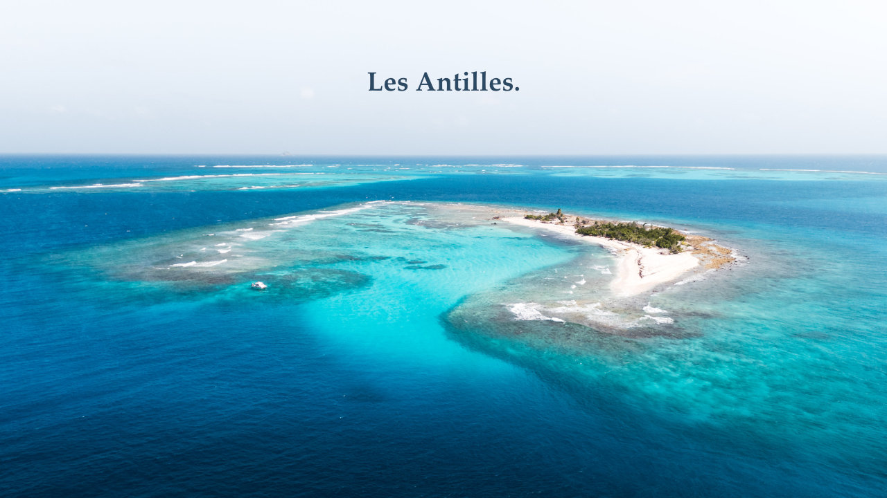

Départ : Brest, France
Arrivée : Brest, France
Distance : 10 000 milles

Arriver aux Antilles, c’était l’objectif du voyage. Maintenant qu’on y est, on a très envie de découvrir leurs trésors.



Nous sommes trois étudiants en école d’ingénieurs qui ont la mer dans le sang.
Un Sun Fast 36 de 1995 pour nous porter aux quatre coins de l’Atlantique.